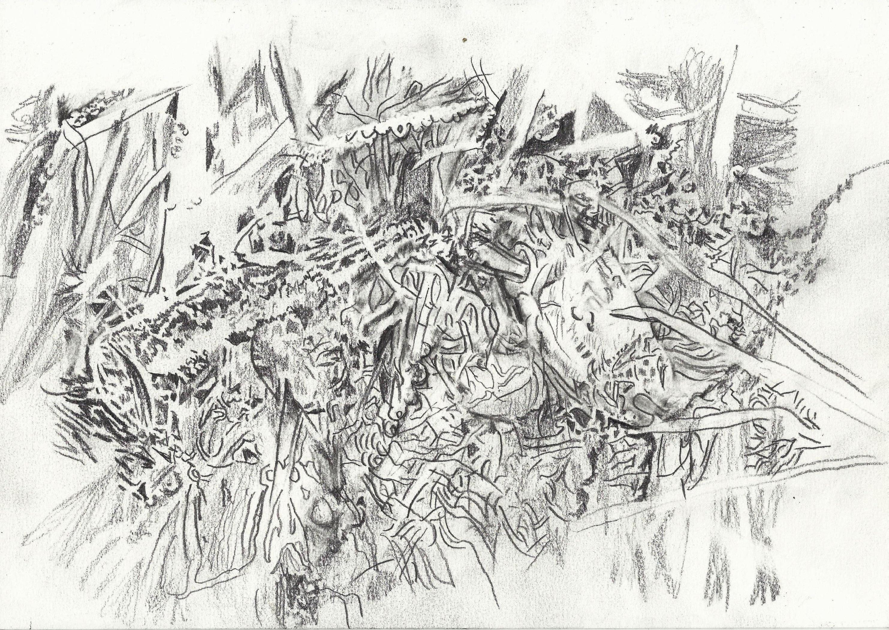
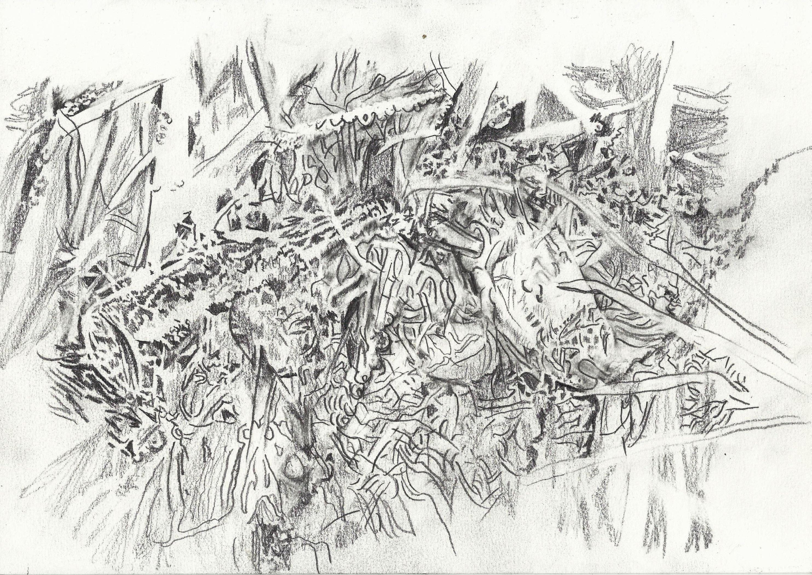

Como constituir um espaço físico e mental que, proporcione experiências poéticas aos estudantes de artes e aos artistas visuais? Como a cidade e arredores, pode se transformar numa espécie de galeria e atelier ao céu aberto?
Esta pergunta nos levou a conceber situações muito simples, como caminhar pelas ruas de Pelotas e arredores acompanhados pelos estudantes de artes e artistas. Uma caminhada despretensiosa, que nos conduzisse à experiência do “caminhar enquanto prática estética”, uma caminhada qualificada como arte, tal como se refere Francesco Careri no livro Walkscapes. O caminhar como prática estética, que tece as práticas caminhantes desde os primórdios da civilização, pelo mito de Abel e Caim, pelas excursões dadaístas, deambulações surrealistas, derivas situacionistas e outros deslocamentos de artistas que se dedicam ao “tempo livre, ou seja, lúdico”. Segundo Careri, na origem, Abel é a representação do homo ludens, figura o qual nos identificamos, ou seja:
Caim é identificável como o homo faber, o homem que trabalha e que sujeita a natureza para construir materialmente um novo universo, ao passo que Abel, realizando, no fim das contas, um trabalho menos fatigoso e mais divertido, poderia ser considerado o homo ludens caro aos situacionistas, o homem que brinca e que constrói um efêmero sistema de relações entre natureza e vida. (...) Abel tem uma grande quantidade de tempo livre para dedicar à especulação intelectual, à exploração da terra, à aventura e ao jogo; é o tempo não utilitarista por excelência. (...) Por isso, já na origem, associam-se ao caminhar tanto a criação artística como o rechaço ao trabalho, e eis porquê da obra que se desenvolverá com os dadaístas e com os surrealista parisienses, uma espécie de preguiça lúdico-contemplativa que está na base da flânerie antiartística que permeia o século XX (CARERI, 2013, p. 36).
Careri nos dá a ver as práticas errantes e seus desdobramentos, no que tange aos processos inventivos, em ações, intervenções, textos e mapas que brotam da “exploração da cidade e a contínua descoberta de realidades” (CARERI, 2013, p. 77). Então, nos propomos a ser por algumas horas Abel, andar por ai... percorrer os veios de Pelotas (sua pele) e arredores ludicamente, livremente, deixando-nos afetar pelo que nos atravessa durante o percurso. Atravessar o espaço físico e ser atravessado por ele e que percorrido, promova a imaginação, o encantamento, o enigma advindo de um estado contemplativo especial, que reverbere sentidos os mais distintos, incitando a laboração artística e potencializando produções singulares por meio de fotografias, vídeos, ações, textos e conceitos poéticos. Um deslocamento distinto dos trajetos diários, das práticas burocráticas do ir e vir na cidade, e da anestesia que somos submetidos pelo sistema de consumo e pelo mundo funcional. Uma excursão, um estado de errância enquanto tática para desviar da recepção passiva. Passear, caminhar, excursionar seria uma tática da invenção do cotidiano, segundo Michel de Certeau, uma maneira de ler a paisagem como se lê um livro. No deslocamento pelo deslocamento como prática estética, podemos resistir a correria ordinária acionando uma tal caminhada que nos faça praticar a lentidão, a observação e o desprendimento do corpo tarefeiro, acionando o olhar, a escuta viva, reinventada e múltiplas interpretações. A caminhada pode nos afetar e também nos conceber motivos e materiais para projetos artísticos futuros. As caminhadas do Grupo de Pesquisa Deslocamentos, Observâncias e Cartografias Contemporâneas (CNPq/UFPel) - DESLOCCC são proposições artísticas e também instauram processos criativos.
Página 40Uma das táticas do DESLOCC é caminhar e observar a cidade: marcamos percursos, pontos de saída e chegada, percorremos coletivamente ou individualmente os trajetos que nos levam as mais distintas narrativas sobre o espaço, a vida, sobre arte, sobre nós.
Entre tantos percursos traçados e percorridos, nos deslocamos até a Marambaia, em Rio Grande. Localidade que não pode ser encontrada no Google maps. Para ir até lá, podemos atravessar o canal São Gonçalo de barco, e/ou nos deslocar pela rodovia BR 392, passar pela ponte Engenheiro Leo Guedes em direção à cidade de Rio Grande, pegar o primeiro retorno à esquerda e dobrar na primeira rótula à direita com um destino só... a placa que sinaliza nosso destino identifica o local como Vila dos Pescadores que, segundo um morador do local: “aqui é a MARAMBAIA... a placa tá errada, quem colocou ali é o pessoal que trabalhou na duplicação e que não conversa com os moradores do local difícil de entrar”.
O vilarejo, com poucas casas habitadas e muitas abandonadas, em ruínas, se estende em trecho estreito na orla do canal São Gonçalo, canal este que corre entre as bordas limítrofes dos dois municípios sulinos: Pelotas – Rio Grande.
Segundo relatos de alguns autores e pesquisadores, é possível destacar que a localidade denominada de MARAMBAIA, se apresenta inserida numa região de intensa e marcante importância, como área referente à formaçãostrutural do município de Pelotas (RS) e acontecimentos sociais paralelos. Estes fatos podem assim ser destacados de acordo com as obras de artistas viajantes, que por aqui passaram e deixaram registros de acordo com a estrutura social e os costumes do período, como por exemplo, a análise iconográfica inserida na obra do artista viajante Jean-Baptiste Debret, onde é possível destacar a importância da localidade denominada de MARAMBAIA, circunvizinha a um ponto de trânsito e/ou comércio de escravos, denominado de “Passo dosNegros”, hoje conhecido também por essa denominação e “Cascalho”, devido ter sido sede da Charqueada do Cascalho, de propriedade do Coronel Pedro Luis da Rocha Osório onde se encontram as edificações remanescentes do imóvel, Engenho Coronel Pedro Osório, a margem direita do Arroio Pelotas. (D’ÁVILA ROSENTHAL; GONÇALVES, 2014, p.4)
Figura. 1. Preparação do piquenique, depois de longa caminhada explorando o local. O piquenique aconteceu no segundo dia de visita a Marambaia, no dia 21 de janeiro de 2014. Além de participantes do Grupo DESLOCC, também participaram da ação dos alunos da disciplina Paisagens Cotidianas e Dispositivos de Compartilhamentos, ministrada pela professora Duda Gonçalves no Mestrado em Artes Visuais do CA/UFPel. Foto: Matheus Afonso J. Lopez.
Figura 2. Conversas, leituras, observações numa tarde de piquenique na Marambaia. Foto Duda Gonçalves.
Figura 3. Vista da prainha da Marambaia e do outro lado do canal a cidade de Pelotas. Foto: Duda Gonçalves.

Figuras 1, 2 e 3 (Galeria)
Atualmente a Marambaia é praticamente desabitada, poucas casas em funcionamento, muitas ruínas em meio à vegetação que cresce livremente, alguns barquinhos e um ou outro pescador. Fomos visitar o local, andar por lá, sentar à beira do canal e conservar num piquenique (Fig. 1, 2, 3). Na primeira visita, em 2012, encontramos um morador que nos relatou que a Marambaia não é a mesma de sua infância, descreveu a transformação histórica e ambiental do lugar, nos apontando onde ficava localizado o Passo dos Negros, o Engenho do Coronel Pedro Osório e que hoje isso é lembrança.
Página 41As narrativas vão sendo agregadas ao nosso andar e enquanto caminhavamos na trilha da Marambaia, cada membro do DESLOCC utilizou mecanismos para registrar a circunstância gerada pelos mais distintos fatores. Os participantes anotaram, observaram e captaram com fotografias ou vídeo seu modo de ver e experimentar o lugar (Fig. 4, 5, 6, 7, 8). É atraves do deslocamento para Marambaia e a ação de caminhar no lugar que descobrimos e temos uma experiência.
A experiência é o que nos passa, o que nos acontece, o que nos toca. Não o que se passa, não o que acontece, ou o que toca. A cada dia se passam muitas coisas, porém, ao mesmo tempo, quase nada nos acontece. Dir-se-ia que tudo o que se passa está organizado para que nada nos aconteça. Walter Benjamin, em um texto célebre, já observava a pobreza de experiências que caracteriza o nosso mundo. Nunca se passaram tantas coisas, mas a experiência é cada vez mais rara (BONDÍA, 2002, p. 21)
Figura 4. A estrada longa e esburacada, vistas de terras planas, os gramados do Pampa. Foto: Alice Monsell.
Figura 5. A estrada se transforma numa trilha de chão. Caminhamos ao longo da prainha, nos campos, nas sombras das árvores. Observamos a Marambaia. Foto: Alice Monsell.
Figura 6. Caminhando no lugar, registramos, com muitas fotos, o que atrai nosso olhar. Este registro fotográfico indica um olhar que se dirija para o chão, percebendo o que não pertence ao lugar. Chamam atenção os papéis, sacolas plásticas, um sapato, uma caixa de leite amassada que se misturam com os capins e as plantas. Contrastam com a bela vista d’água e do aguapé que flutua calmamente no canal São Gonçalo, no fundo da imagem. Foto: Alice Monsell.
Figura 7. A imagem dá testemunho da situação de uma árvore centenária na margem do canal. Observamos o lixo deixado por outros visitantes que acenderam um fogo de chão no tronco da árvore queimada viva e os rastros da destruição das chamas que marcaram a árvore e mataram a grama no local. Foto: Alice Monsell.
Figura 8. Figueira Centenária encontrada na Marambaia Foto: Duda Gonçalves.
Figuras 4 a 8 (galeria)
O deslocamento físico num lugar é um procedimento artístico que está na base das nossas atividades e que está associado a diversas operações e práticas artísticas contemporâneas. As práticas de deslocamento físico – ações de visitar e caminhar num lugar - nem sempre são visíveis num trabalho artístico apresentado para o público. Isto porque, na arte, os deslocamentosfrequentemente ocorrem num local longe do espaço de exposição.
A palavra deslocar emsua etimologia latina “locare” significa “colocar” e se refere à ação de mudar de um lugar para outro ou de uma posição para outra, afastar, desviar (FERREIRA, 1986, p. 567). Esta mudança de localização pode denotar o movimento de um objeto ou de uma pessoa. O deslocamento de um objeto é uma operação empregada pelo artista para mudar seu contexto cultural, portanto, alterando sua significação cultural. Esta operação tem sua base no gesto inaugural do readymade de Marcel Duchamp que deslocou um objeto - um mictório - de seu contexto cultural habitual e tentou inscrever este objeto banal na Exposição dos Independentes de 1917, em Nova Iorque. Quando a “obra” intitulada A Fonte foi recusada, Duchamp, usando o pseudônimo de Richard Mutt, escreveu uma carta dirigida aos organizadores que esclarece como o deslocamento operaliza esta recontextualização cultural do objeto: “Ele pegou um artigo ordinário da vida e o dispôs de forma que sua significância de uso desapareceu sob seu novo título e ponto de vista – ele criou um novo pensamento para aquele objeto” (GAYFORD e WRIGHT, 1998, p. 183). Na arte, o simples ato de deslocar um objeto de um lugar para outro pode modificar sua significação cultural. O deslocamento físico de uma pessoa também altera seu contexto cultural e o modo de ver e pensar o entorno e o mundo. Francesco Careri afirma:
Página 42(...) que foi caminhando que o homem começou a construir a paisagem natural que o circunda. (...) O caminhar é uma arte que traz em seu seio o menir, a arquitetura e a paisagem. A partir deste simples ação foram desenvolvidas as mais importantes relações que o homem travou com o território. (2013, p. 27)
E o deslocamento físico, na arte, vai ter qualificação em diferentes contextos e períodos históricos, como: Grand Tour, excursão, deambulação, deriva, errância e transurbância - assim nomeiam as andanças, os intelectuais, os dadaístas, os surrealistas, os situacionistas, os artistas do Land art e outros caminhantes solitários como Hélio Oiticica. Os deslocamentos destes artistas revelam motivações que os conduzem a percursos distintos, traçados e imbricados aos aspectos urbanos, sociais, geológicos, políticos, ecológicos, artísticos, etc..
As práticas de deslocamento na arte contemporânea também são discutidas no livro de Miwon Kwon (2002) One place after another. Um capítulo deste livro traduzido para o português, “Um lugar após o outro: Anotações sobre site specificity” (2011), focaliza nestas práticas que envolvem o deslocamento (displacement) do artista. Kwon propõe que, o conceito tradicional de uma proposta artística realizada especificamente para um lugar [site specific] perdeu sua imobilidade física. Os sítios de atuação e o artista hoje são mais “transportáveis” e “nômades” (2011, p. 167).
A partir dos anos 90 emerge o “artista itinerante”, termo usado por Kwon para se referir ao “trânsito físico do artista para criar trabalhos em várias cidades ao longo do mundo de arte cosmopolita.” (2011, p. 177). Hoje, muitos artistas viajam pelo mundo e realizam seus trabalhos com ou sem recursos de uma instituição cultural. No artigo, “O Tema do Deslocamento na Arte Contemporânea”, professor australiano John Potts (2012) notacomo as práticas de deslocamento tomam forma de práticas geopolíticas, levando os artistas a viajar e trabalhar em vários contextos sociais. Segundo Potts, “A rede global se tornou um espaço de intercâmbio, de representações diversas do mundo”; o artista é um “explorador dentro da rede de imagens globais” (2012, p. 9). Potts observa o deslocamento em vários aspectos da vida:
Arte contemporânea deve ser entendida dentro de uma percepção larga que os humanos tem alterado sua orientação espaço-tempo. [...] Os processos de globalização – frequentemente entendidos como um fluxo intensificado de capital, informação e de pessoas – funcionam em muitos níveis. A migração, dentro e através das fronteiras nacionais, é um fator significante, também em relação ao trauma de deslocamento (migratório). Imagens digitais são também parte deste fluxo global (POTTS, 2012, p. 11, Tradução Alice Monsell).
Alguns artistas que trabalham atualmente com o deslocamento desta forma são: Francis Alÿs, Gabriel Orozco, Vicent + Feria, Maria Ivone dos Santos e Hélio Fervenza, Marina Camargo e o grupo Stalker, o qual Careri faz parte. No Grupo DESLOCC, nossos deslocamentos são regionais e no entorno de Pelotas, até então. Endereçando a questão do fluxo de imagens no mundo hoje, notamos que nossos trabalhos de pesquisa entre 2012 e 2014 tentaram problematizar as representações da região no extremo sul do Brasil. Pois, as imagens turísticas e da mídia projetam para fora, no contexto global, a imagem da paisagem sulina, do Rio Grande do Sul e do Pampa. Perguntamos: Será que as imagens da mídia ou a paisagem pictórica tradicional são capazes de representar a paisagem sulina hoje? - seus aspectos urbanos, privados e públicos e os relacionamentos subjetivos experimentados no lugar? Nosso modo de investigar outras possibilidades de ver e criar imagens de nosso entorno é praticar o ato de caminhar, instaurando um processo de produção artística através de deslocamentos e observâncias em locais como a Marambaia.
Página 43Em Aula Magna promovida pelo PPGAV - Mestrado do Centro de Artes da UFPEL em abril de 2015, curador e professor da USP Dr. Agnaldo Farias palestrou sobre o tema de deslocamentos na arte contemporânea. Ele discutiu alguns artistas desde os anos sessenta que trabalham com o movimento e a portabilidade, mencionando, por exemplo, o “Museu Valise” de 1966 de Marcel Duchamp. A maioria dos artistas apresentados pelo Farias são artistas que praticam o ato de caminhar ou que usam algum dispositivo para despertar e compartilhar o ato de caminhar com os outros, por exemplo: as instruções e mapas de Fluxus artist Yoko Ono, Map Piece (Peça para Mapa) de 1962; ou a ação caminhante Snowball Track (Trilha da bola de neve) de 1964 realizada pelo artista conceitual britânico Richard Long, conhecido por suas ações de caminhar, de onde emergem esculturas de pedras ou de madeiras achadas ao longo do percurso no campo que ele utiliza para marcar um trilho no chão ou que retira do sítio e desloca para um espaço de exposição.
Marambaia é um lugar muito perto de Pelotas, mas oferece um contexto natural muito diferente que despertou experiências diversas em todos que participaram no piquenique. Outrossim, é avistada do lado de cá, por quem frequenta a orla do canal São Gonçalo em locais como o Quadrado, o Porto e o Campus Anglo da UFPel. Sentar na prainha e comer como prática artística proposta implica uma arte que se aproxima das práticas do cotidiano e da vida, onde a experiência da arte pode ser uma experiência de percepção direta da vida e da paisagem neste lugar.
Ao falar de uma experiência direta da percepção, pensamos no pensamento do filósofo estadunidense John Dewey e seu livro Arte Como Experiência. No ensaio “Ter uma Experiência”, Dewey (2010) nota as dificuldades enfrentadas pelo pintor ao tentar criar uma experiência equivalente, numa pintura, àquela vivida pela percepção direta da paisagem: “ânsia de expressar através da pintura as qualidades percebidas de uma paisagem é contígua à demanda de lápis ou pincel. Sem uma encarnação externa, a experiência permanece incompleta” (DEWEY, 2010, p. 136).
Implícita neste texto de 1934 é a concepção tradicional da “paisagem artística” como uma imagem física, mas a paisagem pode ser concebida simplesmente como a imagem percebida de um lugar, uma vista “encarnada” no aqui e agora, literalmente “vista”. O ato de caminhar na Marambaia produz paisagens singulares com cada passo do observador. Para Dewey, a arte está intimamente ligada ao acontecimento de uma experiência singular que ele relaciona ao “estético”. O ato de criar a paisagem, enquanto caminhamos e observamos a Marambaia, é um ato artístico do observador consciente de estar envolvido num fazer artístico de ver. Segundo Dewey,
Para perceber, o espectador ou observador tem de criar sua experiência. E a criação deve incluir relações comparáveis às vivenciadas pelo produtor original. Estas não são idênticas em um sentido literal (2010, p. 137).
Página 44Embora esta citação se refira à situação de um observador que olhe para uma obra criada por uma outra pessoa (o produtor original), parece importante notar como o ato de perceber aproxima o observador do ato criador e da experiência da criação do artista. A percepção direta, durante a prática de caminhar, é essencial para os membros do Grupo DESLOCC. Caminhar não é somente um ponto de partida de nossas produções variadas - livros digitais, vídeos, fotografias, desenhos, cartões postais, entre outras. Quando caminhamos, não somos observadores simplesmente receptivos, mas observadores envolvidos simultaneamente num fazer artístico de um processo criativo. O ato de se deslocar, observar, caminhar é um fazer e um perceber com todo o corpo. Nesta situação, o observador realiza um fazer-caminhar e um fazer-observar que produz paisagens vividas e outras relações que emergem desta prática de se deslocar no lugar. Ao caminhar, observar e perceber, o artístico e o estético se aproximam. A percepção direta não cria imagens físicas, como o artista que talha ou pinta; produz experiências singulares como aquelas vivenciadas na Marambaia. Uma experiência única percebida diretamente - vivida - pode ser vista como produto de uma relação orgânica - um ato simultaneamente artístico e estético.

 

Figura 9. Frame do vídeo Marambaia, o encontro de Beatriz Rodrigues, disponível em www.youtube.com [Cartografia visual da visita à localidade da Marambaia, às margens do Rio São Gonçalo; águas estas que separam o território das cidades de Rio Grande e Pelotas.]
Figura 10. Cartões QR Marambaia, de Fabricio Marcon [oito cartões de visita, tamanho 5x9cm com a imagem de diferentes locais e situações vivenciadas na Marambaia.], mestrando do Curso de Mestrado em Artes Visuais do Centro de Artes da UFPel, sob orientação da professora Duda Gonçalves
Figura. 11. Horizonte aguapé de Duda Gonçalves, exposição Pons Dulcis Sulinas II, na Galeria A SALA do Centro de Artes – UFPel [trabalho realizado a partir de fotografias registradas em deslocamento na Marambaia]
Figura 12. Detalhe de Horizonte aguapé de Duda Gonçalves
Figura 13. Sobrarmambaia (2014) de Alice Monsell é um desenho de lápis grafite sobre papel canson realizado a partir da assemblagem de imagens de objetos descartados e do lixo fotografados durante a caminhada na Marambaia. O desenho faz parte de uma série chamada Os caminhos do lixo, sendo realizada para o Projeto de Pesquisa Sobras do Cotidiano e da Arte: Contextos, reaproveitamento, diálogos e documentação do lixo em deslocamento entre o espaço privado e público (projeto do Grupo de Pesquisa DESLOCC/CNPq/UFPEL com o apoio de uma bolsa Pbip/UFPel).
Figuras 9 a 13 (galeria)
O que parece acontecer durante nossas ações de caminhar, em lugares como a Marambaia, é esta percepção direta e a consciência de estar vivendo uma experiência. Não uma experiência habitual ou rotineira, mas especial, singular, memorável, coletiva e subjetiva. O modo de vivenciar o lugar também se relaciona com a vida e as poéticas dos participantes convidados e dos membros do Grupo DESLOCC que tem formação em áreas de conhecimento diversas, como: a geografia, artes visuais, antropologia, arqueologia, história e ensino. Cada pessoa aborda seu fazer-caminhar criandosuas própriaspercepções sensíveis. As ações desenvolvidas pelo Grupo DESLOCC partem de práticas de deslocamento, no sentido do deslocamento do próprio artista, particularmente o ato de caminhar. Ou seja, estar na Marambaia e caminhar por lá é uma ação artística, como também um processo que pode reverberar outras cidades, outras Marambaias, ressoando seu eco em outros processos e práticas da arte. (Fig. 9, 10, 11, 12, 13).
Página 45BONDÍA, Jorge Larrosa. Notas sobre a experiência e o saber de experiência. In: Revista brasileira de educação. Jan/Fev/Mar/Abr 2002. Nº 19. Disponível em: www.scielo.br . Acessado em: 10 mai. 2014.
CARERI, Francesco. Walkscapes. O caminhar como prática estética. São Paulo: Editora G. Gilli, 2013.
CERTEAU, Michel de. A invenção do cotidiano. Petrópolis: Vozes, 2009.
DUCHAMP, Marcel. “O Caso de Richard Mutt” carta publicada na edição única de “Blind Man” In. GAYFORD, Martin:
WRIGHT, Karen, (orgs.). The Grove book of art writing. New York: Grove Press, 1998.
FARIAS, Agnaldo. “Viajar, Caminhar e algumas outras formas de Movimento”. Palestra/Aula Magna proferida no IV Seminário de pesquisa do Mestrado em artes visuais: Convergências na arte contemporânea. Palestra, Centro de Artes da
UFPEL, Pelotas, RS, 22/04/2015.
FERREIRA, Aurélio Buarque de Holanda. Novo dicionário Aurélio da língua portuguesa. Rio de Janeiro: Nova Fronteira, 1986.
D’ÁVILA ROSENTHAL, Mariane; GONÇALVES, Eduarda. Marambaia: história, memória e poética. In: Anais do XVIII Seminário de História da Arte do Centro de Artes da UFPel. Disponível em: periodicos.ufpel.edu.br . Acessado em: 03 mai. 2015.
KWON, Miwon. One place after another: site-specific art and locational identity. Cambridge: MIT Press, 2002.
______.“Um lugar após o outro: Anotações sobre site specificity”. In: Revista arte e ensaios 17; Temáticas. Escola de Belas Artes, p. 166-187, disponível em: www.eba.ufrj.br . Acessado em 12 dez. 2011.
POTTS, John. The Theme of Displacement in Contemporary Art. In: E-rea: Revue électronique d’études sur le monde anglophone. 9.2/2012. (DOI : 10.4000/erea.2475). Disponível em: erea.revues.org . Acessado em: 15 mar. 2015.
Eduarda Azevedo Goncalves – Artista visual, Bacharel em Pintura pela Universidade Federal de Pelotas (1996). Realizou o Mestrado em Artes Visuais (2000), pelo Programa de Pós-Graduação do Instituto de Artes da Universidade Federal do Rio Grande do Sul - UFRGS e o doutorado, pelo mesmo Programa (2011). É professora dos Cursos de Artes Visuais e no Curso de Mestrado do Programa de Pós-Graduação - Mestrado em Artes Visuais, do Centro de Artes da Universidade Federal de Pelotas - UFPel. É colíder do Grupo de Pesquisa Deslocamentos, Observâncias e Cartografias Contemporâneas – DESLOCC (UFPel/CNPQ) Coordena a Galeria A Sala do Centro de Artes junto à Profa. Alice Monsell. Participa dos Grupos de Pesquisa Percursos poéticos: procedimentos e grafias da arte contemporânea (UFPel/CNPQ) e Veículos da Arte (UFRGS/CNPQ).
Alice Jean Monsell - Artista visual, Professora Adjunta do Curso de Artes Visuais, na área de Desenho e do Programa de Pós-Graduação - Mestrado em Artes Visuais do Centro de Artes da Universidade Federal de Pelotas. Realizou doutorado em Artes Visuais (UFRGS); Mestrado em Artes Visuais pelo PPGAV/IA/UFRGS. Membro do Grupo de Pesquisa do CNPq "Veículos da Arte" da UFRGS. Pesquisadora no Grupo de Pesquisa do CNPq Percursos Poéticos: procedimentos e grafias na contemporaneidade do Centro de Artes da UFPEL e colider do Grupo de Pesquisa do CNPq Deslocamentos, observâncias e cartografias contemporâneas. Co-coordenadora de A Sala Galeria de Arte do Centro de Artes da UFPEL. Bacharelado em Inglês - Literatura Comparada do Douglass College/Rutgers - The State University of New Jersey (1980).